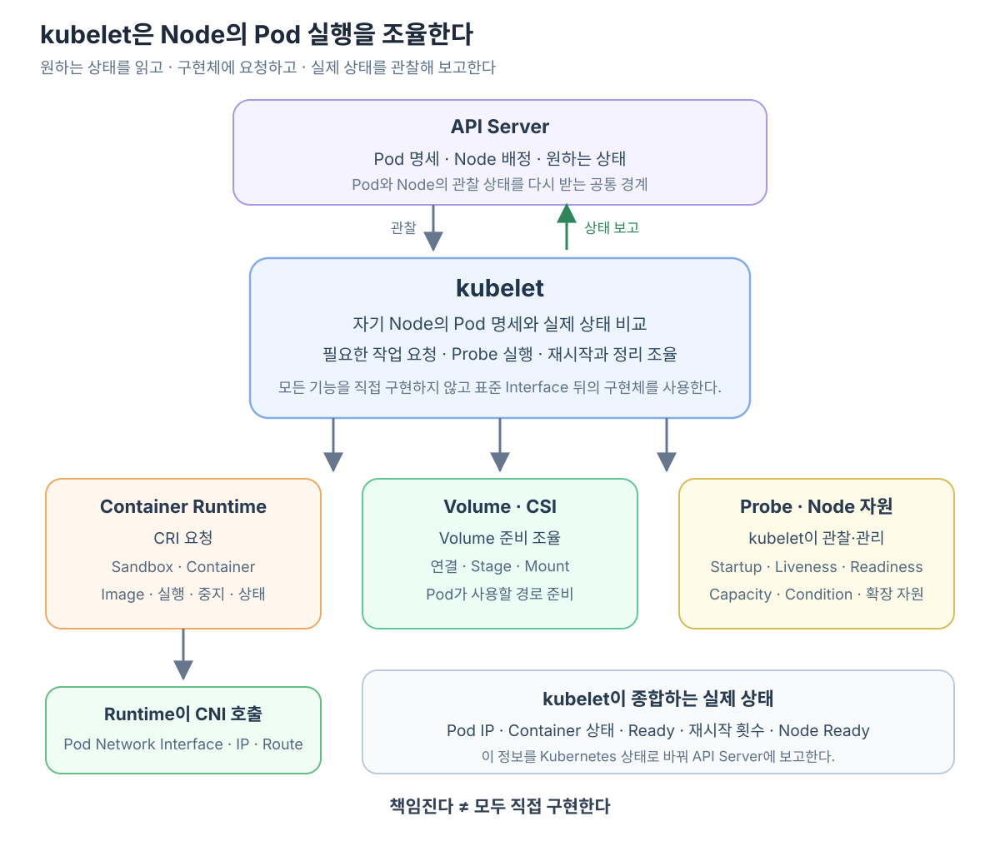

kubelet은 Pod를 생성하기 위해 Container Runtime에 요청하고, Volume을 준비하며, Pod 상태를 API Server에 보고하는 구성요소가 맞다. 하지만 이 작업들을 서로 떨어진 기능 목록으로 외우면 kubelet의 중심 역할이 잘 보이지 않는다.
kubelet의 본질은 다음 한 문장에 있다.
kubelet은 API Server에 선언된 Pod의 원하는 상태를 자기 Node의 실제 상태로 만들고, 그 상태가 계속 유지되도록 여러 Node 구성요소를 조율한 뒤 관찰 결과를 다시 API Server에 보고하는 Node Agent다.

Scheduler가 배치하면 kubelet이 그 Node에서 실행을 책임진다
Scheduler와 kubelet은 같은 Pod를 보지만 질문이 다르다.
Scheduler
“이 Pod를 어느 Node에 배치할까?”
kubelet
“내 Node에 배정된 이 Pod를 실제로 어떻게 실행하고 유지할까?”
Scheduler가 Node B를 선택하면 Pod 명세에 spec.nodeName: node-b가 기록된다. Node B의 kubelet은 API Server를 관찰하다가 이 Pod를 발견한다.
kubelet은 Pod 명세와 Node의 실제 상태를 비교한다.
Pod 명세
Container 2개가 실행돼야 함
Volume 1개가 연결돼야 함
특정 Secret과 ConfigMap이 필요함
Readiness Probe를 통과해야 함
Node B의 현재 상태
아직 Sandbox와 Container가 없음
Volume도 Mount되지 않음
이 차이를 줄이는 것이 kubelet의 일이다.
kubelet은 한 번 실행하고 끝나는 명령기가 아니다
kubelet은 Pod 생성 시점에만 등장하지 않는다. 자신의 Node에 배정된 Pod를 계속 관찰하면서 원하는 상태와 실제 상태를 맞춘다.
자신에게 배정된 Pod 확인
→ 필요한 실행 조건 준비
→ Runtime에 실행·중지 요청
→ Container와 Probe 상태 관찰
→ 차이가 있으면 다시 조정
→ Pod·Node 상태 보고
→ 다시 관찰
Container가 비정상 종료되면 Pod의 Restart Policy에 따라 Runtime에 재시작을 요청할 수 있다. Pod가 삭제되면 Container 종료, Volume 해제와 Sandbox 정리가 이루어지도록 조율한다.
따라서 kubelet의 책임 범위는 Pod 생성이 아니라 자기 Node에서 이루어지는 Pod 생명주기 전체에 가깝다.
Container 실행은 CRI를 통해 Runtime에 맡긴다
kubelet은 Linux Container를 직접 생성하거나 Image Layer를 직접 관리하지 않는다. CRI를 통해 containerd나 CRI-O 같은 Container Runtime에 요청한다.
kubelet
→ Image가 준비돼 있는지 확인·요청
→ Pod Sandbox 생성 요청
→ Container 생성·시작·중지 요청
Container Runtime
→ Image와 Container 생명주기 구현
→ Sandbox와 Container 상태 반환
일반적인 Pod Network 구성에서는 Runtime이 Pod Sandbox와 Network Namespace를 준비하고 CNI Plugin을 호출한다. kubelet이 CNI Plugin에 직접 veth를 만들라고 요청하는 흐름으로 이해하면 역할 경계가 흐려진다.
이 실행 경로의 구체적인 순서는 kubelet은 Pod 실행을 어떻게 Runtime과 CNI에 맡기고 상태를 보고할까?에서 자세히 살펴본다.
Volume은 kubelet이 필요성을 판단하고 Node 쪽 준비를 조율한다
Pod 명세에 Volume이 있다면 Container를 시작하기 전에 그 Volume을 Node와 Pod에서 사용할 수 있도록 준비해야 한다.
kubelet 내부의 Volume 관리 기능은 Pod 명세를 바탕으로 필요한 Volume 상태를 확인한다. Storage 종류에 따라 Control Plane의 Storage Controller, CSI Driver의 Controller 기능, Node에서 실행되는 CSI Node Plugin 등이 실제 연결과 Mount 작업에 참여할 수 있다.
Pod 명세에 Volume 선언
→ kubelet이 자기 Node에서 필요한 Volume 상태 확인
→ 필요한 Storage 구성요소에 연결·Stage·Mount 작업 요청
→ Pod가 사용할 경로 준비
→ Runtime이 그 경로를 Container에 노출
그러므로 “kubelet이 Volume을 준비한다”는 말은 kubelet이 모든 Storage Protocol을 직접 구현한다는 뜻이 아니다. kubelet이 Pod 실행에 필요한 Volume 준비를 책임지고, 실제 Storage별 작업은 Plugin과 Driver에 맡겨 결과를 맞춘다는 뜻이다.
Secret·ConfigMap 같은 Pod 입력도 kubelet이 API Server에서 필요한 내용을 얻고, Container가 사용할 수 있는 형태로 준비하는 과정에 참여한다.
실행 후에는 Probe와 Container 상태를 계속 관찰한다
Container가 시작됐다고 해서 Pod가 곧바로 요청을 받을 준비가 된 것은 아니다. kubelet은 Pod 명세에 정의된 Probe를 실행한다.
| Probe | kubelet이 확인하려는 것 |
|---|---|
| Startup Probe | Application 시작이 완료됐는가? |
| Liveness Probe | Application을 재시작해야 할 정도로 비정상인가? |
| Readiness Probe | 지금 Service 요청을 받을 준비가 됐는가? |
Probe는 kubelet이 실행하거나 결과를 관리한다. Readiness Probe가 실패하면 Container Process가 실행 중이어도 Pod는 Ready가 아닐 수 있다. 이 상태는 이후 EndpointSlice가 새 연결 후보를 정하는 데 영향을 준다.
kubelet은 Runtime을 통해 Sandbox와 Container의 실제 상태도 확인한다. 따라서 Process가 종료됐는지, 재시작 횟수가 어떻게 변했는지, Container가 준비됐는지를 Kubernetes의 Pod 상태로 해석할 수 있다.
관찰한 Pod와 Node 상태를 API Server에 보고한다
kubelet은 자기 Node에서만 보이는 실제 실행 결과를 Kubernetes의 공통 상태로 바꿔 API Server에 보고한다.
Pod에 대해서는 다음과 같은 상태가 대표적이다.
Pod IP
Pod Phase
Pod Condition
Container 실행 상태
Container Ready 여부
재시작 횟수
Node에 대해서도 다음과 같은 상태를 보고한다.
Node Ready 상태
CPU·Memory 등 Capacity와 Allocatable
Node Condition
Node 주소와 일부 Runtime 정보
등록된 확장 자원
다만 kubelet이 모든 API Object의 상태를 만드는 것은 아니다. 예를 들어 Service의 EndpointSlice는 별도의 Controller가 Pod와 Service 상태를 보고 갱신한다. kubelet은 자신의 책임인 Pod와 Node의 관찰 상태를 제공하고, 다른 구성요소는 그 상태를 자기 목적에 맞게 사용한다.
kubelet이 직접 구현하는 일과 조율하는 일을 구분한다
| 작업 | kubelet의 책임 | 실제 작업에 참여하는 구성요소 |
|---|---|---|
| Pod를 실행할 Node 선택 | 담당하지 않음 | Scheduler |
| 자기 Node의 Pod 생명주기 조정 | 담당 | kubelet |
| Container와 Sandbox 생성 | 요청하고 상태 확인 | Container Runtime |
| Pod Network Interface·IP 구성 | 실행 흐름을 조율 | Runtime과 CNI Plugin |
| Storage 연결과 Mount | 필요 상태 확인과 Node 쪽 준비 조율 | Volume Manager·CSI Driver 등 |
| Startup·Liveness·Readiness Probe | 실행과 결과 관리 | kubelet |
| Pod·Node 상태 보고 | 담당 | kubelet → API Server |
| Service 전달 규칙 구성 | 담당하지 않음 | kube-proxy 또는 대체 구현 |
“책임진다”와 “직접 구현한다”는 같은 말이 아니다. kubelet은 Pod가 자기 Node에서 실행되게 만들 책임을 지지만, Container·Network·Storage의 구체적인 구현은 표준 Interface 뒤의 Runtime과 Plugin에 맡긴다.
문제가 생기면 kubelet의 경계에서 원인을 나눌 수 있다
Pod가 Node에 배정됐는데 실행되지 않는다면 먼저 kubelet이 Pod를 발견했는지와 어떤 단계에서 막혔는지를 본다.
Node가 아직 선택되지 않음
→ Scheduler와 배치 조건 확인
Node는 선택됐지만 Sandbox 생성 실패
→ kubelet Event와 Container Runtime 확인
Network 준비 실패
→ Runtime의 CNI 호출과 CNI Plugin 상태 확인
Volume Mount 실패
→ kubelet Volume 상태와 CSI 구성요소 확인
Container는 Running이지만 Ready가 아님
→ Readiness Probe와 Application 상태 확인
API Server의 상태가 실제 Node와 다름
→ kubelet의 보고 상태와 API Server 연결 확인
이렇게 보면 kubelet은 모든 문제의 원인은 아니지만, Node에서 Pod 실행이 어느 단계까지 진행됐는지를 이어 주는 중심 관찰 지점이다.
kubelet을 한 문장으로 다시 정의한다
kubelet은 자기 Node에 배정된 Pod를 발견하고, 실행에 필요한 Network·Storage·Container 환경을 Runtime과 Plugin을 통해 준비하며, Probe와 실제 상태를 계속 관찰해 원하는 상태를 유지하고, 그 결과를 API Server에 보고하는 Node Agent다.